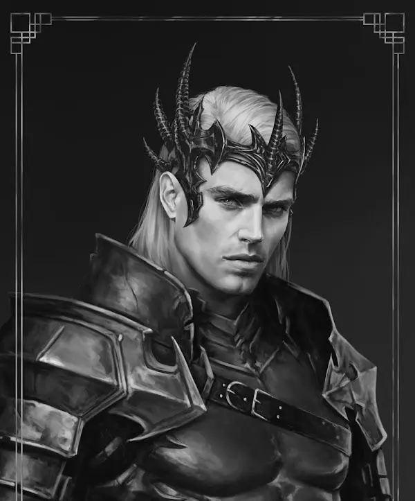
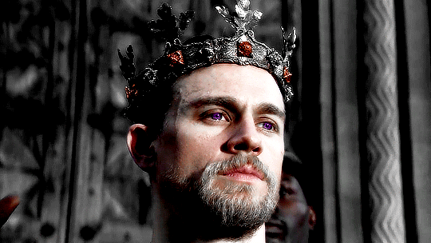
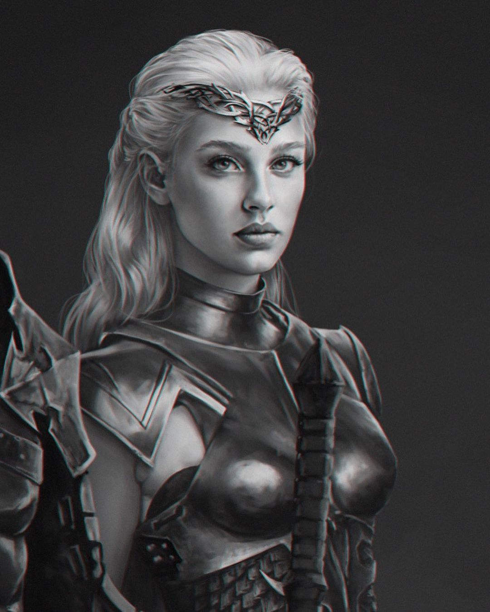

Os Targaryens🐉
A dinastia Targaryen
Os conquistadores
Aegon, Visenya e Rhaenys
A Guerra da Conquista é o nome dado à série de empreitadas militares em que Aegon I Targaryen conquistou Westeros.
Apoiado por suas duas esposas-irmãs (Visenya e Rhaenys), seus dragões e um pequeno exército, Aegon submeteu seis dos Sete Reinos.
Visenya Targaryen
.jpg)
Visenya nasceu em Pedra do Dragão, filha do Lorde Aerion Targaryen e da Senhora Valaena Velaryon. Ela tinha dois irmãos mais novos, Aegon e Rhaenys. Como esperado, Visenya se casou com seu irmão Aegon, seguindo o costume valiriano. Contudo, ele também tomou a irmã mais nova como esposa. As pessoas dizem que Aegon se casou com Visenya pelo dever e com Rhaenys pelo desejo. Antes do casamento, Visenya montou em um dragão, formando um laço com o animal Vhagar.
Aparência e Personalidade
Como seus irmão ela possuía as clássicas características Valirianas com os cabelos prata-ouro, os quais ela mantinha trançados e presos com anéis e, olhos violetas. Possuía uma beleza mais dura e austera que sua irmã, Rhaenys. Voluptuosa, sensual e impetuosa, Visenya era também firme, séria e implacável. Alguns afirmam também que Visenya não era estranha às artes das trevas e lidava com venenos. Visenya era tanto um montadora de dragão quanto uma guerreira, estando confortável tanto em seda quanto em uma armadura. Sendo que quando se vestia como uma guerreira ela sempre empunhava a espada de Aço Valiriano, a Irmã Negra.
Visenya TargaryenAegon Targaryen, o conquistador.
Aegon Targaryen, o Primeiro de Seu Nome, também conhecido como Aegon, o Conquistador ou Aegon, o Dragão, foi o primeiro Rei no Trono de Ferro, que conquistou seis dos Sete Reinos e fundou a soberana dinastia Targaryen de Westeros. Aegon Targaryen nasceu em Pedra do Dragão em 27 a.C., filho de Lorde Aerion Targaryen e da senhora Valaena Velaryon. Ele tinha duas irmãs, Visenya (nascida antes dele) e Rhaenys (nascida depois dele). De acordo com a tradição valiriana e Targaryen, Aegon se casou dentro da família, mas ao invés de tomar apenas uma de suas irmãs como esposa, como era comum, ele acabou se casando com ambas. Aegon havia reivindicado seu dragão Balerion antes do seu casamento.
Aparência e Personalidade
Aegon era claramente ambicioso. Ele era descrito como alto, de ombros largos, e poderoso em aparência com seus olhos roxos e um curto cabelo prateado e dourado. Ele era muito carismático e autoritário. Durante a Conquista ele usava normalmente uma camisa com escamas negras para a batalha e usava sua espada de aço valiriano chamada Blackfyre. Sua coroa era um simples aro de aço valiriano, engastado com grandes rubis de corte quadrado. Aegon era visto como um enigma. Ele era uma pessoa solitária, e seu único amigo era Orys. Ele era um excelente guerreiro que tinha uma espada chamada Blackfyre mas voava em seu dragão somente para batalha ou viagem, e nunca entrou em torneios. Ele permaneceu fiel a suas irmãs e deixou o governo em suas mãos, e tomou comando apenas quando necessário. Enquanto ele foi duro com aqueles que o desafiaram, ele era generoso com aqueles que dobraram os joelhos.
 Aegon, o conquistadorRhaenys Targaryen
Rhaenys Targaryen foi a irmã mais nova do rei Aegon I Targaryen, o primeiro Senhor dos Sete Reinos. Ela era casado com o irmão, assim como sua irmã mais velha Visenya, e dizem que Aegon a tinha como favorita. Seu filho, Aenys I, daria continuidade a linhagem dos reis dragão, com quinze dos próximos dezesseis monarcas Targaryen sendo descendentes de Rhaenys e Aegon. Ela montava o dragão Meraxes.
Aparência e Personalidade
Rhaenys era uma mulher bela de cabelo dourado prateado, que ela mantinha longo e solto, e tinha um corpo esbelto. Ela era carinhosa, graciosa, brincalhona, curiosa, impulsiva e dada a devaneios de fantasia, com um aspecto malicioso a sua personalidade. Ela adorava música, dança e poesia. Também amava voar, sendo dito que ela passava mais tempo voando com seu dragão do que seus irmãos, juntos.
Rhaenys Targaryen